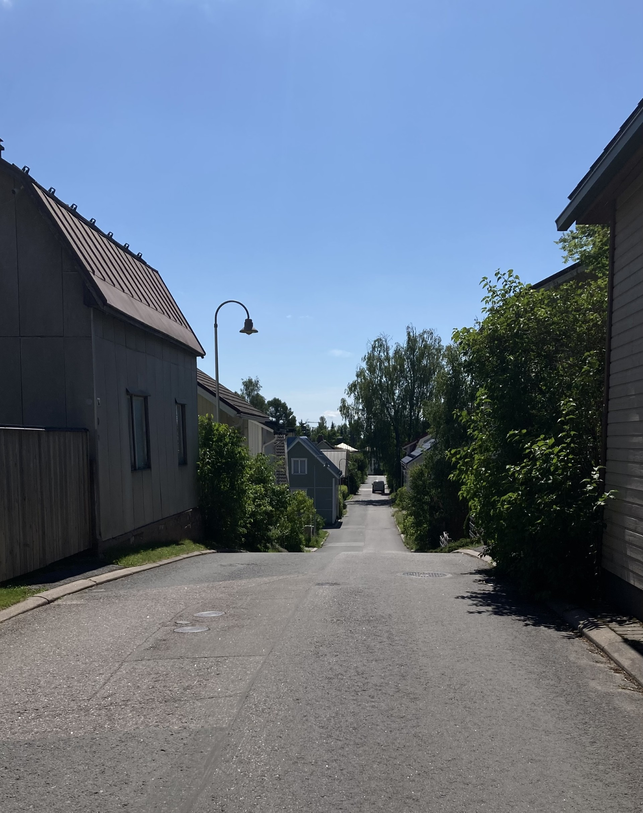

Mikä on Wanha Tykki?
Wanha Tykki on Lappeenrannan asuinalue, joka on noin kilometrin päässä ydinkeskustasta. Tykki tunnetaan viihtyisästä ympäristöstään, historiallisista rakennuksistaan ja aktiivisesta yhteisöstään. Alueella yleinen ilme on talot vieri vieressä, ja kadut ovat kapeita ja tunnelmallisia. Talot ovat pääsääntöisesti puutaloja, ja ne ovat maalattu monenlaisiin väreihin, mikä luo iloisen ja elävän ilmapiirin. Tykki on tunnettu myös kauniista syreeneistään, jotka kukkivat upeasti keväisin ja kesäisin.
Alueen historia ulottuu vuosikymmenten taakse, ja monet rakennuksista ovat säilyttäneet alkuperäisen tunnelmansa nykypäivään asti. Tykki on vuosien aikana muuttunut ja kehittynyt, mutta alueen yhteisöllisyys ja ainutlaatuinen henki ovat säilyneet sukupolvelta toiselle. Alueella järjestetään tapahtumia ympäri vuoden aina joulukalenterista kesäkirppiksiin ja kahviloihin.
Mistä tunnistaa Wanhan Tykin?
Luulen, että mulle jäis mieleen semmonen kesäilta, kun minä istun tuolla rappusilla ja heiluttelen varpaitani ja on ihanan rauhallista. Kuuluu korkeintaan lintujen liverrys ja ehkä juna vislaa tuolla, mutta se ei häiritse ku siihen on tottunu. Sellanen ihana rauha.
Lainattu Tykin tarina -kirjasta, haastateltava nro 13.
Tulevia tapahtumia

Wanhan Tykin kirpputori
Tule kokemaan kirpputorielämyksiä upealle vanhalle puutaloalueelle 23.5.2026 klo 10-14. Tarjolla on monenlaista tavaraa, herkullista kahvia ja yhteisöllistä tunnelmaa. Tervetuloa tekemään löytöjä ja nauttimaan kesäisestä ilmapiiristä!